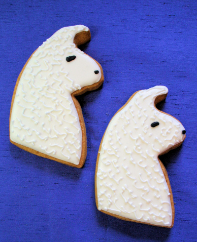

Baking with Paullama Deen
Paullama Deen teaches you how to cook. Browse the recipes below!

Llama Cake
Ingredients
- 1/2 cup butter
- 1 cup sugar
- 2 eggs
- 1 1/2 cups sifted self-rising flour
- 1/2 cup milk
- 2 teaspoons vanilla extract
- 1 3/4 teaspoons baking powder
- Preheat oven to 350 degrees F (175 degrees C). Grease and flour a llama-shaped pan.
- In a medium bowl, cream together the sugar and butter. Beat in the eggs, one at a time, then stir in the vanilla. Combine flour and baking powder, add to the creamed mixture and mix well. Finally stir in the milk until batter is smooth. Pour or spoon batter into the prepared pan.
- Bake for 30 to 40 minutes in the preheated oven. For cupcakes, bake 20 to 25 minutes. Cake is done when it springs back to the touch.
- Ice with llama colors
Llama cookies
Ingredients
- 3 1/2 cups flour
- 1 teaspoon baking powder
- 1/2 teaspoon salt
- 1 cup butter, softened
- 1 1/2 cups sugar
- 2 eggs
- 2 teaspoons vanilla
- Combine flour baking powder and salt and set aside. Cream together butter and sugar. Beat in eggs one at a time and then add vanilla. Gradually add flour mixture until well blended.
- Cover and keep in the frig for about 2 hours.
- Preheat oven to 350* Roll out dough onto a lightly floured surface. Cut out into llama shapes and place on greased cookie sheets.
- Bake 6-8 minutes or until very lightly browned. Remove from cookie sheets and cool.
Llama cake
Ingredients
- Crust
- 18 whole Graham Crackers
- 1/3 cup sugar
- 1/3 cup melted butter
- Filling
- 1 Tablespoon (heaping) Lime Zest
- 1/2 cup lime juice
- 2 egg yolks
- 1 can (14 Oz) Sweetened Condensed Milk
- Preheat oven to 350 degrees F (175 degrees C).
- For the crust:
Crush crackers in a food processor or Ziploc bag. Pour them into a bowl and stir in sugar and melted butter. Press into a pie pan and bake for 5 minutes or until golden and set. Remove from oven and set aside to cool slightly - For the filling:
Mix lime zest, lime juice, and egg yolks in a mixing bowl. Add in condensed milk and mix on high until smooth and thick. Pour mixture into crust and bake for 15 minutes. - Remove from oven, allow to cool, then refrigerate for at least 1 hour—more if possible.
- Optional: Use whipped cream or lemon zest to draw an outline of a llama on top
Llama cake
Ingredients
- 1 1/2 cups all-purpose flour
- 3 1/2 teaspoons baking powder
- 1 teaspoon salt
- 1 tablespoon white sugar
- 1 1/4 cups milk
- 1 egg
- 3 tablespoons melted butter
- In a large bowl, sift together the flour, baking powder, salt and sugar. Make a well in the center and pour in the milk, egg and melted butter; mix until smooth.
- Heat a lightly oiled griddle or frying pan over medium high heat. Pour or scoop the batter onto the griddle, using approximately 1/4 cup for each pancake. Brown on both sides and serve hot.
Llama food
Ingredients
- Grass
- Hay
- Grain
- Go to field
- Graze